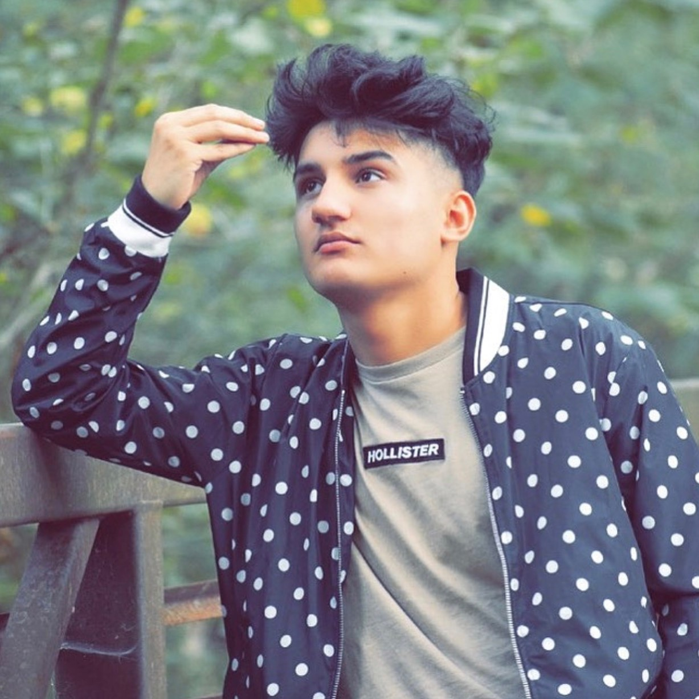
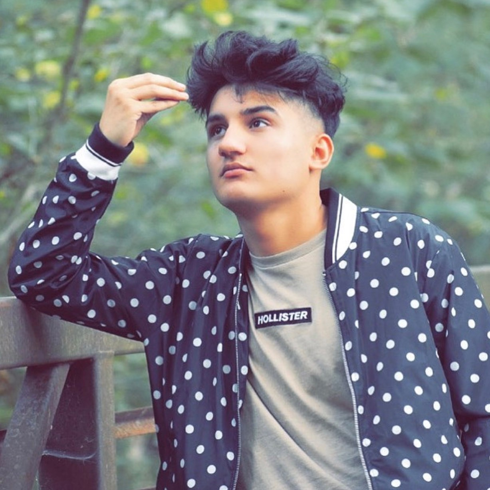
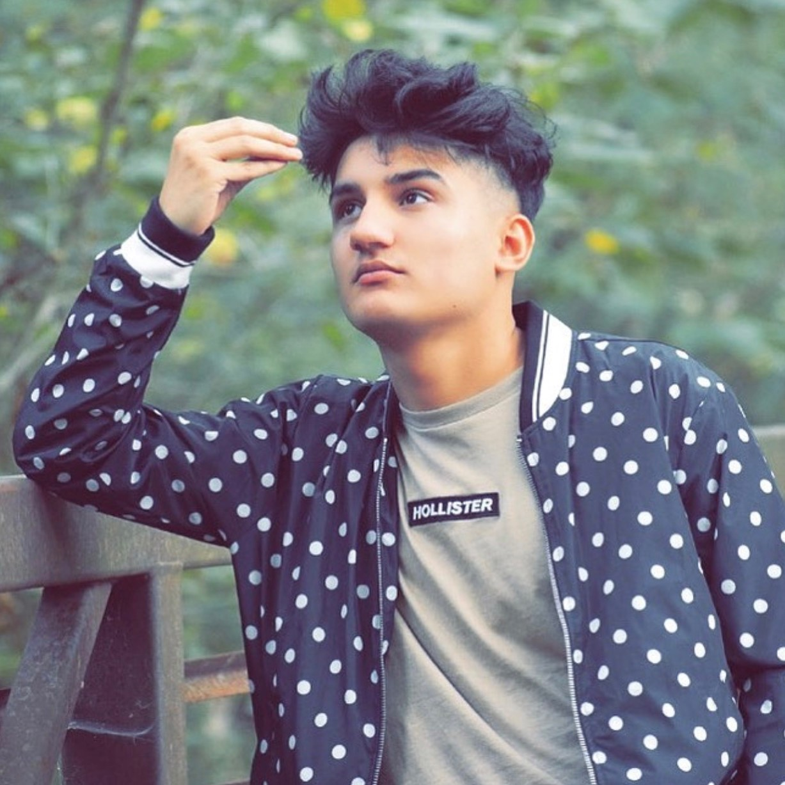

Edris Shahem
Student at GSU who is Majoring in CS

Student at GSU who is Majoring in CS
| Assignments | Homework |
|---|---|
| Classwork 00 | Homework 00 |
| Classwork 01 | Homework 01 |
| Classwork 02 | Homework 02 |
| Classwork 03 | Homework 03 |
Tennis is a racket sport that can be played individually against a single opponent (singles) or between two teams of two players each (doubles). Each player uses a tennis racket that is strung with cord to strike a hollow rubber ball covered with felt over or around a net and into the opponent's court. Tennis is an Olympic sport and is played at all levels of society and at all ages. The sport can be played by anyone who can hold a racket, including wheelchair users.
Learn more about Tennis
"I'm living a dream I never want to wake up from. I am not a perfectionist, but I like to feel that things are done well." - Ronaldo